The answer in thirty seconds
His observable edge is selective, informed-looking liquidity consumption. The important trades do not just spend more money. In one mined transaction, they take offers from an unusually broad set of accounts already waiting in the order book.
- The headline is misleading. The wallet made $5,644,317, but its top five winners produced 144% of net profit. Removing those five makes the wallet negative.
- Blind copying is not the edge. 139 delayed $100 copies lost $855.28. The later sample also lost -6.68%.
- The public trade feed hides structure. We decoded all 149 trigger transactions. Every one was a successful V2
matchOrderscall with the target as the BUY taker. - Breadth separated signal from noise. Broad sweeps beat the market price by +23.2 points; narrower transactions missed it by -0.6 points.
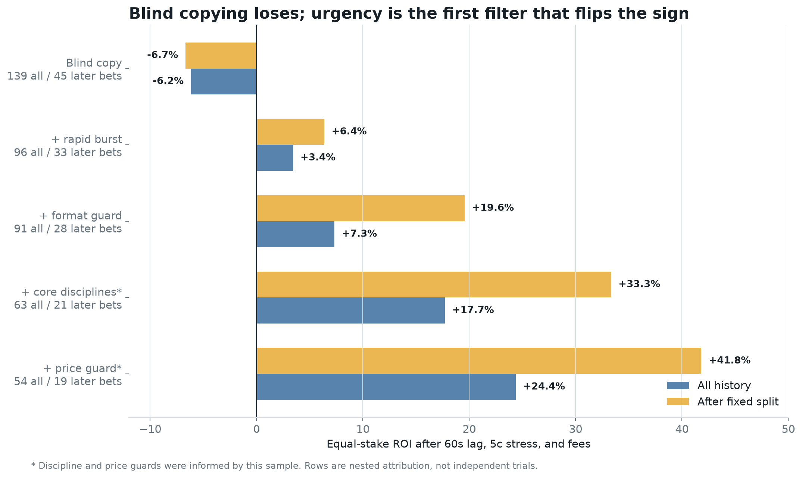
First, the painful result: copying loses
The original registered test was deliberately harsh, but ordinary: it did not give the follower the whale's old price.
- Wait until the target has crossed $25,000 of aggressive buying and at least 70% of its net direction points to one outcome.
- Keep only the first signal for each underlying match, so a series and its individual maps cannot be counted as independent ideas.
- Wait 60 seconds, then use the first unrelated public trade in the following minute as the available price. If none appears, retain the trigger price.
- Make the price five cents worse, include the account-observed fee curve, and place the same $100 stake every time.
The result was 80 wins and 59 losses, yet -$855.28 net profit on $13,900 of turnover. The maximum historical drawdown was $2,055.76.
Why winning more than half the bets was not enough
Prediction-market prices already contain a probability. Buying a contract at 60 cents means paying roughly as if it has a 60% chance to win. A strategy can win 58% of its bets and still lose if it repeatedly pays prices that require a higher hit rate.
Blind copying won 80 times. The public prices implied about 77.15 wins. The gap was only +2.0 points. In ordinary language, the extra wins were neither large enough nor valuable enough to establish a generic “copy his big buys” edge.
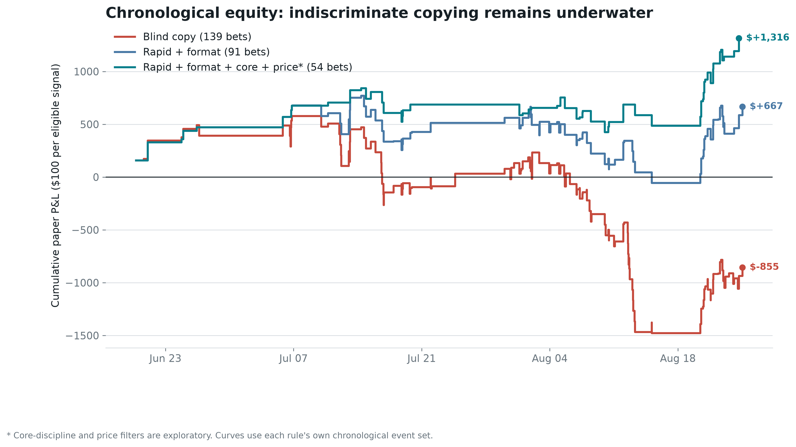
What if a copy bot is nearly instant?
Speed helps, but the broad replay finds no sharp 1-second-versus-5-second cliff. The dangerous variable is the price paid after the whale has consumed the available offers.
The new audit crosses ten delays, from the trigger's own second through five minutes, with ten adverse-price assumptions from zero through 20 cents. Every cell includes fees. At the most optimistic same-second price with no extra adverse movement, blind copying returns only +3.4%. At one second plus one cent it returns +1.0%. At one second plus two cents it is already negative at -0.9%.
The timestamps impose an important limit. Polygon block timestamps and the historical public tape are recorded to whole seconds. A 0.1-second bot and a 0.5-second bot cannot be separated honestly. The same-second scenario may also include unrelated prints whose exact within-second order is unknown, so it is an optimistic lower bound rather than a reproducible fill.
Polymarket's official lifecycle separates an off-chain MATCHED state from MINED on-chain settlement. This strategy needs the mined matchOrders calldata to count maker addresses, so its clock starts at the block timestamp. A bot with private or earlier CLOB-match information is testing a different signal and is not represented by this public-wallet replay.
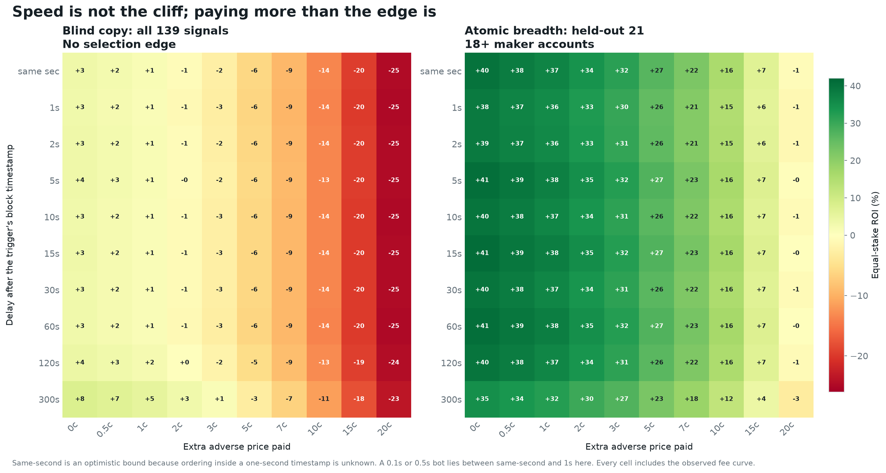
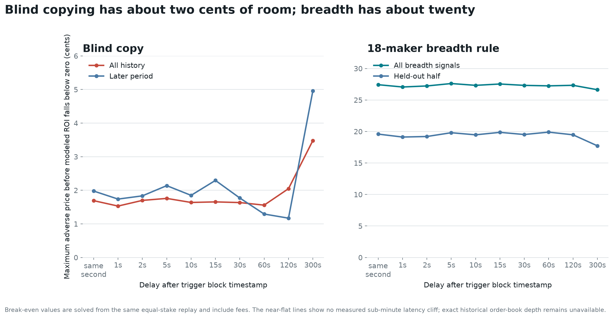
The breakthrough came from looking inside the trade
A public feed row says the whale bought one outcome. Polygon calldata says exactly how that buy was assembled.
Polymarket's V2 exchange accepts one taker order and an array of maker orders in a call named matchOrders. The taker demands immediate execution. Each maker had already signed an offer. One public-looking trade can therefore be an atomic sweep through many counterparties and several prices.
We fetched and decoded every one of the 149 trigger hashes. All 149 showed this wallet as the decoded taker buying the signaled token. The typical trigger matched 19 maker orders from 14 distinct maker accounts. 66 triggers crossed more than one price level. The reconstructed notional agreed with the signal to within less than one millionth of one percent.
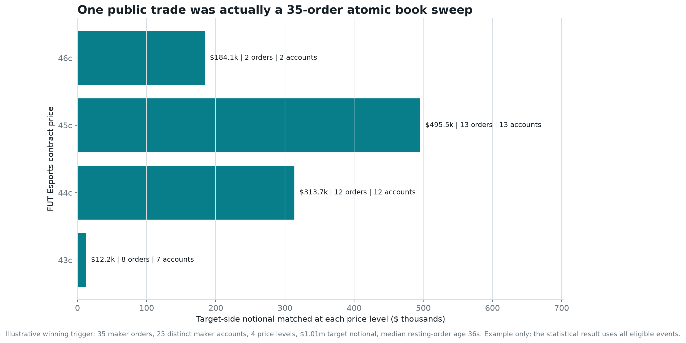
The discovery: atomic breadth
The strongest observable fingerprint is simple: did the triggering transaction match at least 18 distinct maker accounts?
The comparison starts with the same conservative event universe: first canonical signal only, core tennis, soccer, and esports disciplines, full-event contracts rather than maps or short markets, target concentration of at least 70%, and trigger prices between 30 and 85 cents. That leaves 80 events. Breadth is the final split.
| What happened | 18+ makers | Below 18 |
|---|---|---|
| Number of bets | 30 | 50 |
| Wins implied by public prices | 16.04 | 29.30 |
| Actual wins | 23 | 29 |
| Price-implied win rate | 53.5% | 58.6% |
| Actual win rate | 76.7% | 58.0% |
| Gap versus price | +23.2 points | -0.6 points |
| Equal-stake return after costs | +41.94% | -11.56% |
At a $100 equal stake, the 30 broad sweeps made $1,258.31. Even after removing the five most profitable winners, the remaining return was +20.1%. The narrower group lost $578.01.
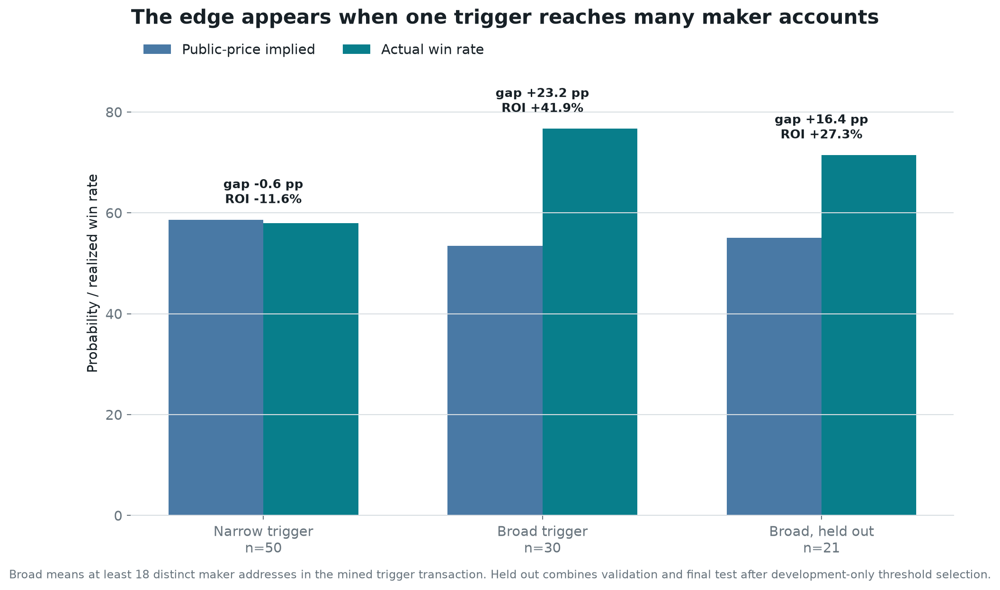
Did it hold up after discovery?
The 18-maker threshold was selected using only the first half of eligible history. Integer cutoffs from 5 through 30 were compared, each requiring at least eight development bets. The next half was then scored without changing the rule.
The broad-sweep rule returned +76.1% in development, +5.1% in the next block, and +44.0% in the final block. Combined after selection, 21 signals won 15 times and returned +27.32%.
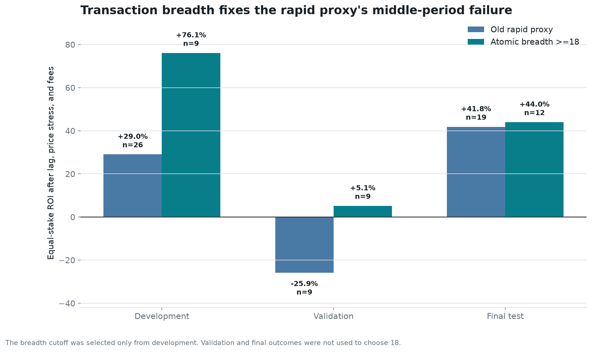
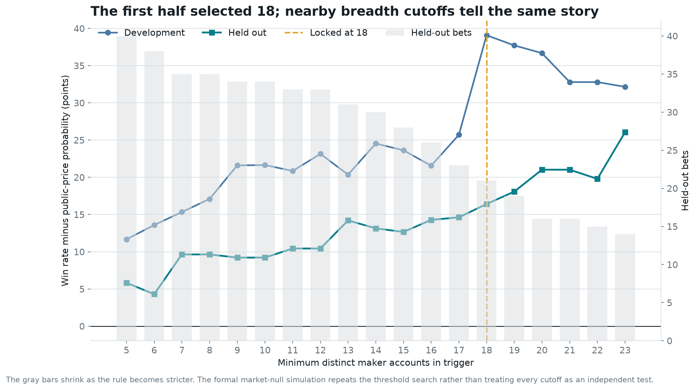
Speed was the clue, not the final answer
The earlier investigation found “conviction compression”: at least 80% of observed taker buying arriving in the final minute. Across the full sample, rapid signals returned +24.4% while slower signals returned -24.5%. That was useful, but incomplete.
The rapid rule lost 25.9% in its middle validation block. Atomic breadth returned +5.1% in that stage and +44.0% in the final test. Speed pointed toward urgency; calldata revealed the stronger form of urgency.
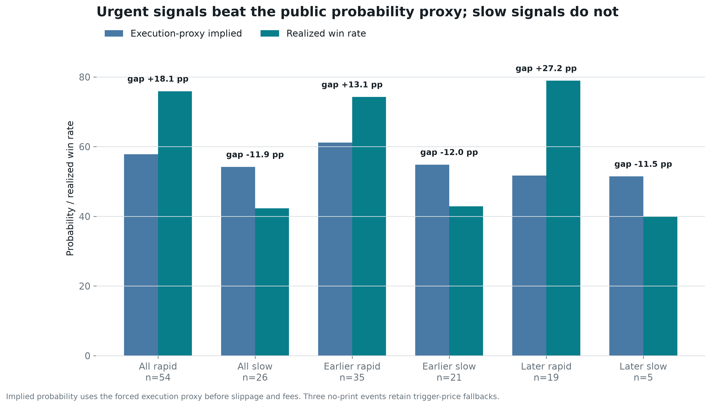
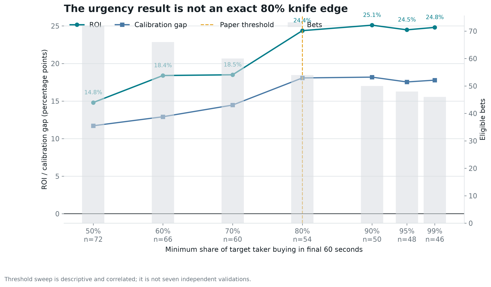
The algorithm: atomic-breadth-18
This is the discovery translated into a rule that can be frozen and tested prospectively.
Paper-trading specification
- Keep only the first signal for the real underlying event in core tennis, soccer, and esports.
- Reject individual maps, single-game fragments, and short-horizon side markets.
- Require the target to be at least 70% concentrated on one outcome and the trigger price to be 30 through 85 cents.
- Decode the mined V2
matchOrderstransaction and verify that the target is the BUY taker for the signaled token. - Count distinct addresses in
makerOrders[].maker. Continue only when the count is at least 18. - Submit immediately after decoding, but reject the paper fill if the executable price is more than a declared maximum above the observed reference. Record actual latency, depth, partial fills, and failures.
- Use a fixed $100 paper stake. Mark at least 80% final-minute taker flow as high confidence, but do not make it a second gate yet.
The historical report keeps the original 60-second plus five-cent case for comparison, but the live paper specification does not intentionally wait. It records the real delay and reports every result on the full latency-and-price surface. No martingale, no use of eventual whale position, and no threshold changes after a bad result.
Could this just be luck, sport mix, or bet size?
A promising pattern is easy to manufacture accidentally. The analysis attacked this one in several different ways.
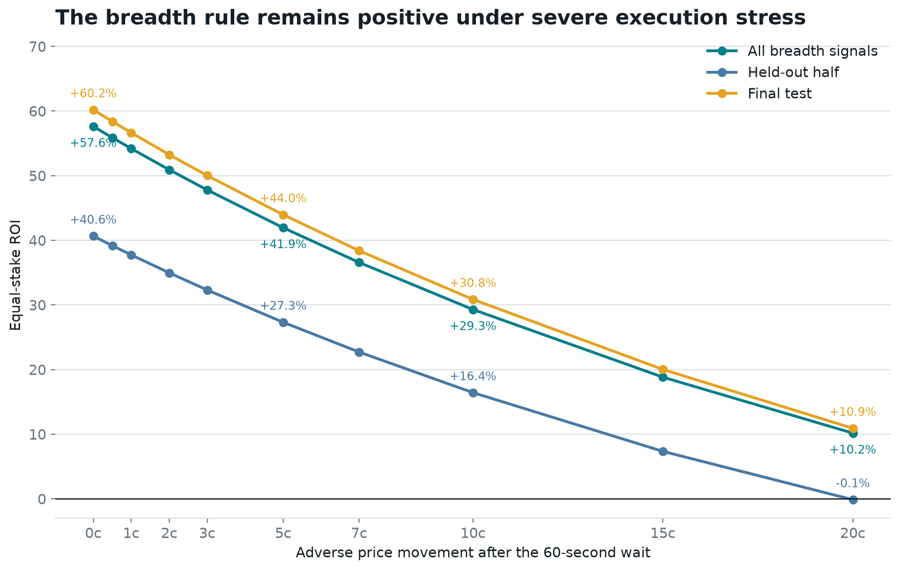
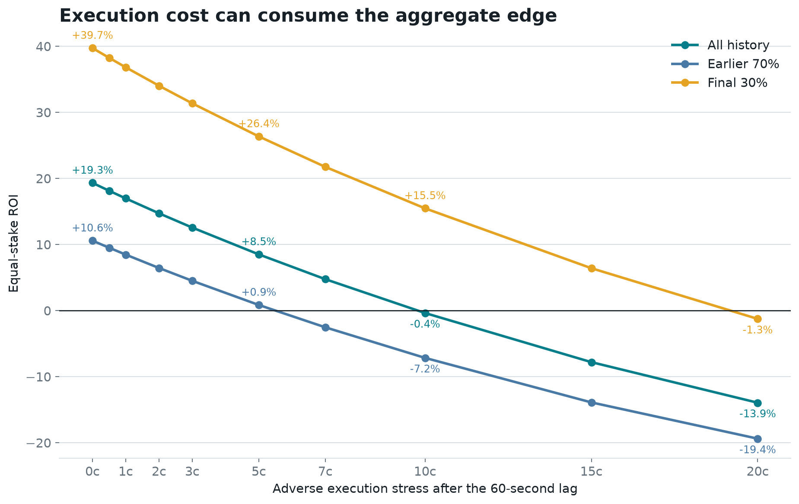
What his edge probably is, and what remains hidden
The discovery is not the trader's secret model. It is the best externally observable signature of when that hidden process is expressing unusually strong conviction.
Why the rest of the wallet still matters
- Maker orders were 92.8% of fills but only 27.9% of dollars. Fill count alone exaggerates routine activity.
- True multi-map series earned $7,569,468 at +31.2%. Single-game and map contracts lost $4,888,740.
- The first visible buy poorly predicted eventual position size; the chronological sizing model had out-of-sample R-squared -0.108.
- The whale can size, make markets, sell, and manage inventory. A follower can reproduce none of that by copying a public feed row.
The honest reasons for doubt
- Thirty is small. The full breadth result has 30 bets; only 21 occurred after threshold selection.
- The held-out win-count test is suggestive, not decisive. Its one-sided Poisson-binomial p-value is 0.086.
- The threshold-search simulation is barely below 0.05. Its p-value is 0.046, not overwhelming evidence.
- The wallet and feature family were chosen retrospectively. The null simulation corrects the stated maker-count cutoff search, not every idea considered during the investigation.
- The history spans roughly two months. A market regime, one operator, or one sports calendar can change.
- Execution is still a proxy. Public prints show activity, not guaranteed historical ask depth, queue position, partial fills, or API publication latency.
Facts, interpretation, and speculation
| Claim | Classification | Why |
|---|---|---|
| Blindly copying every large signal lost money. | Observed fact | 139 forced bets under declared execution assumptions. |
| All trigger transactions made the wallet the BUY taker. | On-chain fact | 149 of 149 decoded V2 transactions. |
| Sweeps across 18 or more makers carried the edge. | Observed in sample | 23 wins from 30, +41.9% ROI, with a positive held-out half. |
| Blind copy bots must be under one second. | Not supported | No sub-minute latency cliff appeared; roughly two cents of adverse price erased the blind-copy margin. |
| Breadth is only a disguise for dollar size. | Not supported | Notional was null after breadth, urgency, and period controls: p=0.858. |
| The trader has private information. | Not established | Behavior is consistent with informed trading, but public data cannot identify the source. |
| The algorithm is ready for live money. | No | Short history, 21 post-selection bets, and proxy execution still leave material uncertainty. |
The honest verdict
The discovery is not “copy this whale.” That strategy lost.
His edge, as far as public evidence can reveal it, is knowing when to demand a lot of liquidity from a lot of counterparties at once. The breadth of the atomic sweep is the footprint. The hidden model or information that causes him to do it remains private.
The frozen algorithm is atomic-breadth-18. Historical result: 23 wins from 30, +41.94% after the original stressed costs. Post-selection result: 15 wins from 21, +27.32%.
For an indiscriminate bot, the historical break-even execution allowance at one second was only 1.53 cents. The lesson is not “buy a faster server.” It is “reject weak signals and control the paid price.”
Decision: collect at least 200 new eligible signals in paper mode without changing the rule. Record actual order-book depth, rejected orders, partial fills, and end-to-end latency. Capital should wait until a genuinely unseen sample remains profitable after costs and after removing its biggest winners.
Small glossary
- Maker
- A trader who leaves an order waiting in the book and provides liquidity.
- Taker
- A trader who accepts an available price immediately. Takers usually reveal more urgency and pay more.
- Atomic sweep
- One mined transaction in which a taker order matches several already-signed maker orders together.
- Maker breadth
- The number of distinct maker addresses consumed by that transaction. It counts accounts, not verified people.
- Adverse price
- How many extra cents a follower pays above the first public execution reference because of spread, consumed depth, or market reaction.
- Implied probability
- A 60-cent contract roughly represents a market-estimated 60% chance before trading costs.
- Calibration gap
- The actual win rate minus the win rate implied by prices. Positive is good only if it survives costs and honest testing.
- ROI
- Profit divided by total stake. A 10% ROI means $10 profit for each $100 staked.
- p-value
- A narrow measure of how often a result at least this large appears under a specified random null. It is not the probability that the strategy is true.
- Confidence interval
- A range showing statistical uncertainty under a particular resampling method. It does not include every source of bias.
Where the facts came from
This essay is a human-readable rendering of committed machine-readable evidence. The core calculations can be audited in:
- edge_analysis.json: blind-copy and atomic-breadth backtests, chronology, null simulation, controls, latency-cost surface, and break-even frontiers.
- edge_features.csv: one row per reconstructed signal, including decoded maker breadth and information available by signal time.
- trigger_transactions.json: decoded
matchOrderscalldata and derived fill anatomy for all 149 trigger transactions. - deep_analysis.json: wallet-level execution, market format, profit, fee, and concentration facts.
- market_tape.json: 143,507 unrelated public prints used for execution proxies and market response.
External context:
- Official Polymarket CTF Exchange V2 repository, including
matchOrdersexecution and the signed order structure. - Official Polymarket order lifecycle, distinguishing off-chain
MATCHED, on-chainMINED, and finalCONFIRMEDtrade states. - Official public market WebSocket, documenting millisecond-stamped book and trade events available prospectively but absent from this historical second-resolution tape.
- Dubach, The Anatomy of a Decentralized Prediction Market, supporting use of authoritative on-chain direction rather than potentially ambiguous public labels.
- Easley and O'Hara, Price, Trade Size, and Information in Securities Markets, classic context for why aggressive trade structure can contain information.
- Bailey et al., The Probability of Backtest Overfitting.
Limit: this is public-wallet research, not proof of identity, distinct human counterparties, private information, causality, historical executable depth, or future profit. It is not financial advice.